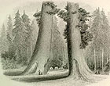

){kind=link}

|  Besides, on the American
Continent, trees are our truest antiquities, retaining (as I
shall show) the heiroglyphics, not only of Nature, but of
Man, during the past ages. The shadows of two thousand years
sleep under the boughs of Montezuma's cypresses, at
Chapultepec; the great tree of Oaxaca is a cotemporary of
Solomon, and even the sculptured ruins of Copan, Palenque,
and Uxmal are outnumbered in years by the rings of trunks in
the forests which hide them. In California, the only human
relics of an earlier date than her present Indian tribes, are
those of a race anterior to the Deluge; but those giants of
the Sierra Nevada have kept, for forty centuries, the annual
record of their growth. As well think of going to Egypt
without seeing the Pyramids, as of visiting California,
without making a pilgrimage to her immemorial Trees! The air perceptibly increased in coolness, clearness, and delicious purity. The trees now rose like colossal pillars, from four to eight feet in diameter, and two hundred feet in height, without a crook or a flaw of any kind. There was no undergrowth, but the dry soil was hidden under a bed of short, golden fern, which blazed like fire where the sunshine struck it. We seemed to be traversing some vast columned hall, like that of Karnak, or the Thousand Columns at Constantinople--except that human art never raised such matchless pillars. Our necks ached from the vertical travels of our eyes, in order to reach their tops. Really, the Western hyperbole of tall trees seemed true, that it takes two men to see them--one beginning where the other leaves off. Our progress, from the ascent, and the deep dust which concealed the ruts, was slow, and would have been tedious, but for the inspiring majesty of the forest. But when four hours had passed, and the sun was near his setting, we began to look out impatiently for some sign of the Trees. The pines and arbor-vitae had become so large, that it seemed as if nothing could be larger. As some great red shaft loomed duskily through the shadows, one and then another of us would exclaim: "There's one!"--only to convince ourselves as we came nearer, that it was not. Yet, if such were the courtiers, what must the monarchs be? We shall certainly be disappointed: nothing can fulfil this promise. A thick underwood now appeared, radiant with the loveliest autumnal tints. The sprays of pink, purple, crimson, and pure gold flashed like sprinkles of colored fire amid the dark-green shadows. "Let us not ask for more," said I; "nothing can be more beautiful." Suddenly, in front of us, where the gloom was deepest, I saw a huge something behind the other trees, like the magnified shadow of one of them, thrown upon a dark-red cloud. While I was straining my eyes, in questioning wonder, the road made a sharp curve. Glancing forward, I beheld two great circular--shot towers? Not trees, surely!--but yes, by all the Dryads, those are trees! Ay, open your mouth, my good driver, as if your two eyes were not sufficient, while we sit dumb behind you! What can one say? What think, except to doubt his senses? One sentence, only, comes to your mind--"there were giants in those days." Between these two colossi, called The Sentinels, ran our road. In front, a hundred yards further, stood the pleasant white hotel, beside something dark, of nearly the same size. This something is only a piece of the trunk of another tree, which has been felled, leaving its stump as the floor of a circular ball-room, twenty-seven feet in diameter. Dismounting at the door, we were kindly received by the Doctor, and assured of good quarters for the night. The sun was just setting, and we were advised to defer the inspection of the grove until morning. Seating ourselves in the veranda, therefore, we proceded to study The Sentinels, whose tops, three hundred feet in the air, were glowing in golden luster, while the last beam had passed away from the forest below them. To my astonishment, they did not appear so very large, after all! Large they were, certainly, but nothing remarkable. At first, I was puzzled by this phenomenon, but presently remembered that the slender saplings (apparently) behind them, were in themselves enormous trees. In dwarfing everything around them, they had also dwarfed themselves. Like St. Peter's, the Pyramids, and everything else which is at once colossal and symmetrical, the eye requires time to comprehend their dimensions. By repeatedly walking to them, pacing round their tremendous bases, examining the neighboring trees, and measuring their height by the same comparison, I succeeded in gradually increasing the impression. When the last gleam of twilight had gone, and the full moon mounted above the forest, they grew in grandeur and awful height, until the stars seemed to twinkle as dew-drops on their topmost boughs. Then, indeed, they became older than the Pyramids, more venerable than the triune idol of Elephanta, and the secrets of an irrecoverable Past were breathed in the dull murmurs forced from them by the winds of night. "Thank God that I have lived to see these works of His hand!" was the exclamation with which I turned away, reluctantly driven in-doors by the keen, frosty air. . . . |